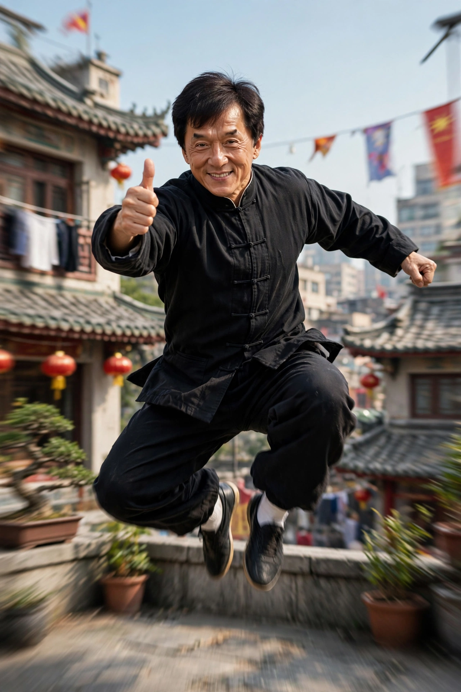

Hong Kong actor and martial artist (born 1954)
| Jackie Chan | |
|---|---|
 Chan, famed for performing his own stunts | |
| Born | Chan Kong-sang, 7 April 1954, Victoria Peak, British Hong Kong |
| Occupation | Actor, martial artist, stunt performer, director, singer |
| Years active | 1962–present |
| Awards | Academy Honorary Award (2016) |
Jackie Chan (born Chan Kong-sang; 7 April 1954) is a Hong Kong actor, director, writer, producer, martial artist, and stunt performer known for his slapstick acrobatic fighting style, comic timing, and innovative stunts, which he typically performs himself. He has appeared in more than 150 films and is among the most recognisable and influential film personalities in the world.
Chan was born in Hong Kong to refugee parents from the Chinese Civil War. At age seven he was enrolled in the China Drama Academy, a Peking opera school, where for ten years he trained in acrobatics, martial arts, and performance as one of the "Seven Little Fortunes" alongside Sammo Hung and Yuen Biao. He began working as a child actor and later as a stuntman, including on Bruce Lee films.
After Lee's death, Chan developed his own comic kung fu persona in Snake in the Eagle's Shadow and Drunken Master (both 1978). Films such as Police Story (1985), Armour of God (1986), and Project A (1983) made him Asia's biggest action star, famous for end-credit reels of failed stunts and injuries. He broke into Hollywood with Rumble in the Bronx (1995) and the Rush Hour series (1998–2007) with Chris Tucker, followed by Shanghai Noon (2000) and the remake of The Karate Kid (2010).
Chan received an Academy Honorary Award in 2016 for his extraordinary achievements in film. His films have grossed well over US$5 billion worldwide. He is also a Cantopop and Mandopop recording artist, a philanthropist through the Jackie Chan Charitable Foundation, and holds records for the most stunts performed by a living actor. In later years he has worked increasingly in mainland Chinese productions and in dramatic roles such as The Foreigner (2017).